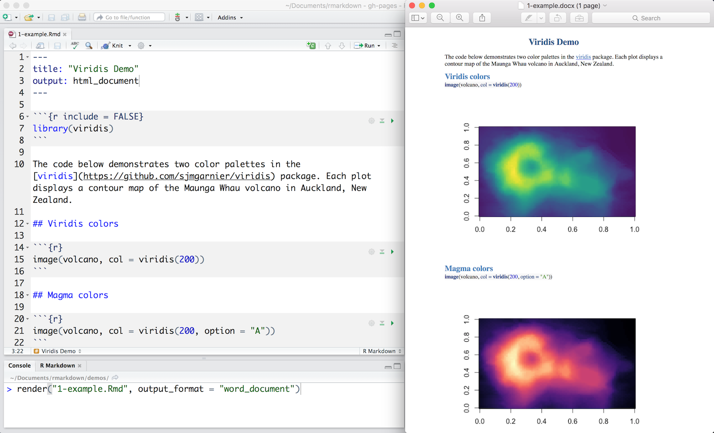
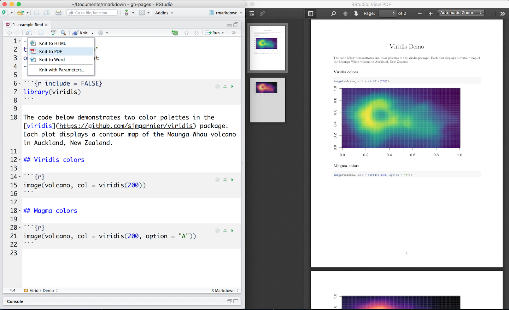

Output Formats
Set the output_format argument of render to render your .Rmd file into any of R Markdown’s supported formats. For example, the code below renders 1-example.Rmd to a Microsoft Word document:
library(rmarkdown)
render("1-example.Rmd", output_format = "word_document")
If you do not select a format, R Markdown renders the file to its default format, which you can set in the output field of a .Rmd file’s header. The header of 1-example.Rmd shows that it renders to an HTML file by default.
The RStudio IDE knit button renders a file to the first format listed in its output field. You can render to additional formats by clicking the dropdown menu beside the knit button:

The following output formats are available to use with R Markdown.
Documents
- html_notebook - Interactive R Notebooks
- html_document - HTML document w/ Bootstrap CSS
- pdf_document - PDF document (via LaTeX template)
- word_document - Microsoft Word document (docx)
- odt_document - OpenDocument Text document
- rtf_document - Rich Text Format document
- md_document - Markdown document (various flavors)
Presentations (slides)
- ioslides_presentation - HTML presentation with ioslides
- revealjs::revealjs_presentation - HTML presentation with reveal.js
- slidy_presentation - HTML presentation with W3C Slidy
- beamer_presentation - PDF presentation with LaTeX Beamer
More
- flexdashboard::flex_dashboard - Interactive dashboards
- tufte::tufte_handout - PDF handouts in the style of Edward Tufte
- tufte::tufte_html - HTML handouts in the style of Edward Tufte
- tufte::tufte_book - PDF books in the style of Edward Tufte
- html_vignette - R package vignette (HTML)
- github_document - GitHub Flavored Markdown document
You can also build books, websites, and interactive documents with R Markdown.
Output Options
Each output format is implemented as a function in R. You can customize the output by passing arguments to the function as sub-values of the output field. For example, 8-outputs.Rmd would render with a floating table of contents.

To learn which arguments a format takes, read the format’s help page in R, e.g. ?html_document.